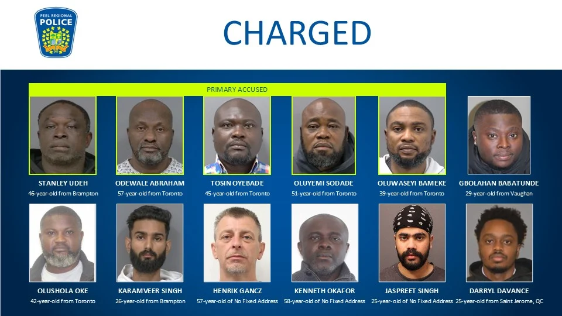

Security & Crime · 17 Nov 2026
Canada charges eight Nigerians, four others over $4.5m car theft

Twelve people, including Nigerians, have been charged in Canada over an alleged organised vehicle theft network that police say recovered 96 stolen vehicles worth $4.5m and destined for West Africa. Read More: https://punchng.com/canada-charges-eight-nigerians-four-others-over-4-5m-car-theft/
Multiple independent publishers are reporting on the same development: Canada charges eight Nigerians, four others over $4.5m car theft.
The available reports place the development in the Security & Crime category. The accounts were compared for agreement on the central event rather than simply shared names or broad topics.
One of the available reports describes the development this way: Twelve people, including Nigerians, have been charged in Canada over an alleged organised vehicle theft network that police say recovered 96 stolen vehicles worth $4.5m and destined for West Africa. Read More: https://punchng.com/canada-charges-eight-nigerians-four-others-over-4-5m-car-theft/
Readers should consult the linked source reports for additional context, updates and details that may change as the story develops.
Sources
This article was produced by the C. O. Eric AI Newsroom from the cited sources. It is published only after automated evidence and safety checks.